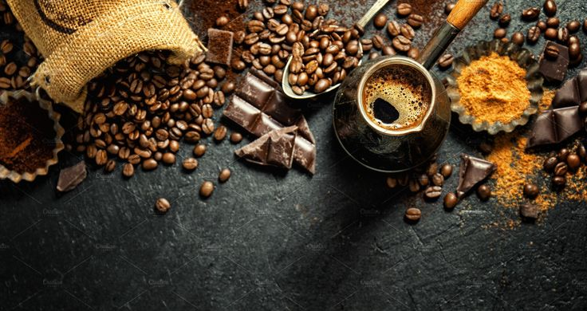

In a world that never stops, Kopiko brings you a moment of pause — a rich, bold experience crafted from the finest coffee beans. Whether it’s a candy or a cup, each sip or bite of Kopiko delivers the authentic essence of real coffee, perfected for those who crave both energy and elegance. Born from passion and brewed with precision, Kopiko isn’t just coffee — it’s a lifestyle. From late-night study sessions to early morning meetings, Kopiko fuels your moments with flavor, comfort, and a hint of indulgence.
